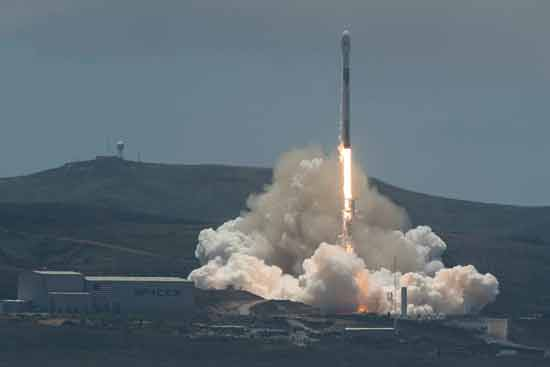

velkommen til Nasa
Nasa står for National Aeronautics and space Administration, Hovedkontoret : ligger Washington. D.C Etaten ble opprettet den 29. Juli 1958 (59,år)
NASA erobret rommet
Ildsprutende raketter, sonder langt ute i solsystemet og fotavtrykk i månestøv. NASA har gjennomført verdens viktigste romfartsoppdrag – og flere er på vei Vi gir deg NASAs opprinnelse med en rekke spørsmål og svar.
Månelandinger, marsrovere og sonder på fjerne kloder. Romfartsgiganten NASA er godt i gang med å utforske solsystemet og er langt fra ferdig. Innen de neste 20 årene skal mennesket både fange asteroider med gigantiske nett og sette fotavtrykk på Mars.